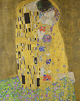

The Kiss (in German Der Kuss) is an oil-on-canvas painting with added gold leaf, silver and platinum. by the Austrian Symbolist painter Gustav Klimt. It was painted at some point in 1907 and 1908, during the height of what scholars call his "Golden Period". It was exhibited in 1908 under the title Liebespaar (the lovers) as stated in the catalogue of the exhibition. The painting depicts a couple embracing each other, their bodies entwined in elaborate beautiful robes decorated in a style influenced by the contemporary Art Nouveau style and the organic forms of the earlier Arts and Crafts movement. The painting now hangs in the Österreichische Galerie Belvedere museum in the Belvedere, Vienna, and is considered a masterpiece of Vienna Secession (local variation of Art Nouveau) and Klimt's most popular work.
